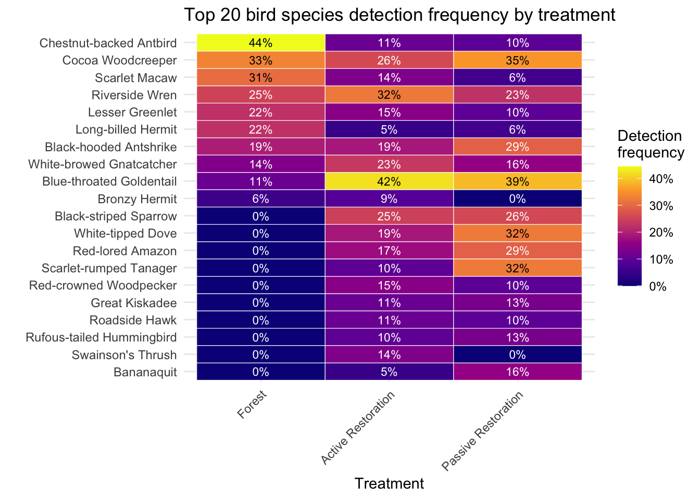

2 Bird surveys
2.1 Earthwatch data
Since January 2025, we have visited 42 unique survey locations and performed 152 point counts, and recorded 120 different species classifications. The mean number of visits was 3, minimum = 0 max = 6.
The distribution of survey effort is as follows:
The distributions of species detected is as follows:
We can examine the average observed species richness per visits for the simplified treatment categories.

These simple patterns in species richness do not reflect the complex species specific affinities birds have to the different habitat categories. Examining how frequently the top 20 most frequently detected birds were detected in each survey category reveals this:

2.2 Historical
Since the start of the project we have visited 64 unique survey locations and performed 469 point counts, and recorded 162 different species classifications.
The survey effort (number of locations samples and number of point counts by year) are as follows:
| year | plots_visited | total_point_counts |
|---|---|---|
| 2017 | 40 | 117 |
| 2019 | 38 | 95 |
| 2021 | 38 | 105 |
| 2025 | 43 | 152 |
The frequency distributions of the species detected are as follows: